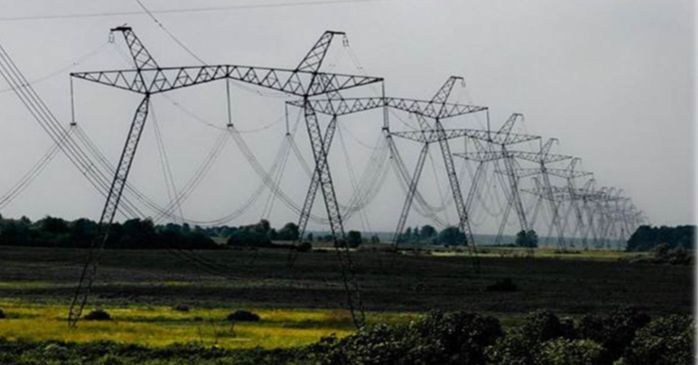
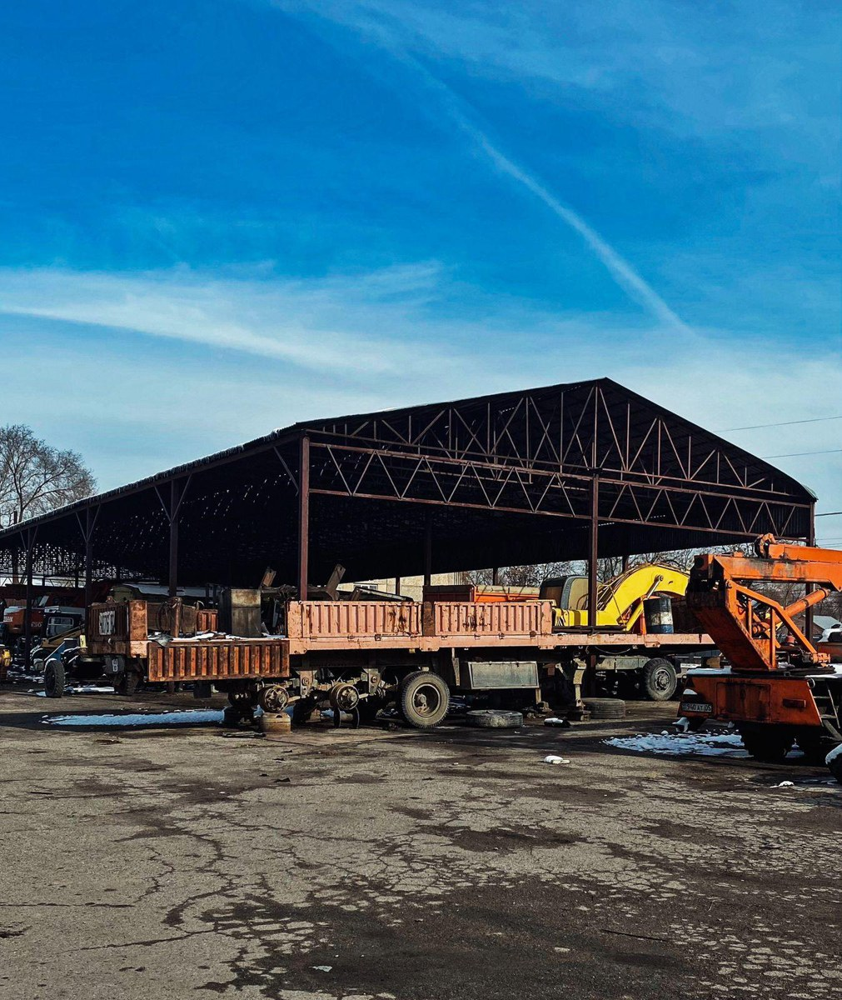
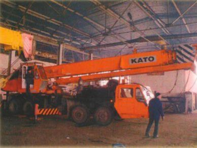
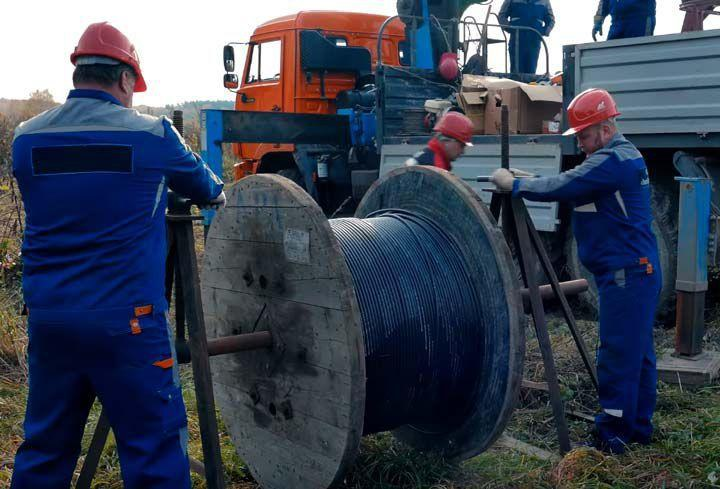

01
Линии электропередачи
Строительство, реконструкция, монтаж опор и проводов.
Энергетическое строительство полного цикла и реализация инфраструктурных проектов по Казахстану.
«Аманат-А» работает в энергетическом и инфраструктурном строительстве, объединяя многолетний опыт, собственную производственную базу и компетенции сложных строительно-монтажных работ.
История предприятия начинается в 1976 году. Сегодня ключевая специализация — энергетическое строительство полного цикла, а также участие в дорожных и инфраструктурных проектах.
Строительство, реконструкция, монтаж опор и проводов.
Строительство и модернизация объектов электросетевого комплекса.
Строительно-монтажные и гидротехнические работы.
Участие в реализации объектов возобновляемой энергетики.
Буровзрывные, земляные и тоннельные работы.
ДЭУ, освещение дорог, мостовые работы, заборы и ограждения.

Комплекс работ на гидроэнергетических объектах, включая гидротехнические сооружения и специальные строительные работы.

Строительство линий электропередачи, монтаж опор, раскатка и монтаж проводов.

Строительство и модернизация подстанций и сопутствующей электротехнической инфраструктуры.
Компания также выполняла работы на объектах дорожной инфраструктуры: строительство ДЭУ, наружное освещение дорог, мостовые работы и устройство защитных ограждений.
Производственная база, техника и специализированные участки позволяют выполнять широкий комплекс строительно-монтажных работ.




Свяжитесь с нами удобным способом. Для деловой переписки используйте email, для оперативной связи — телефон или WhatsApp.